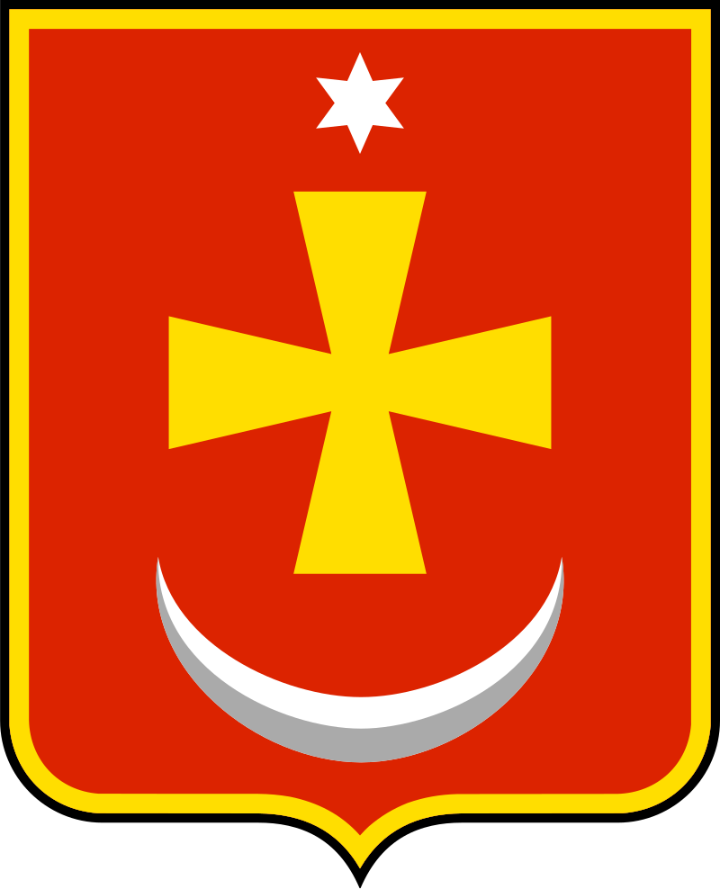
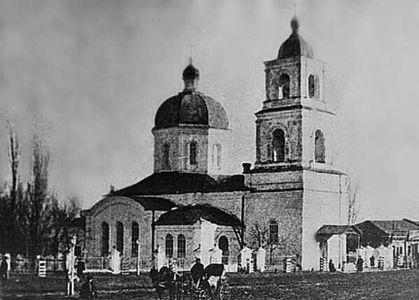
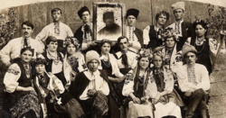

Конотоп
Вступ
Коното́п (МФА: [kon̪oˈt̪ɔp]) — місто в Україні, адміністративний центр Конотопського району та Конотопської міської громади Сумської області.
Розташований на річці Єзуч, притоці Сейму, у північній частині України, на заході Сумщини за 131 км від обласного центру. Населення — 68 тисяч осіб (2025)[11][12], за цим показником посідає 48 місце в Україні.
Історичне населене місце, один з історичних центрів Посем'я та Сіверщини, друге за значенням і населенням місто Сумщини.
Загальні відомості
Конотоп — середньовелике місто за кількістю населення, регіональний промисловий центр.
В історичному контексті місто відоме передусім завдяки Конотопській битві 27—29 червня 1659 року — основній і переломній події московсько-козацької війни та важливому епізодові Руїни.
В культурному — завдяки видатній повісті Григорія Квітки-Основ'яненка «Конотопська відьма».
Назва
Слово коното́п позначає місце, де топнуть коні, себто будь-яку болотисту, топку та непроїзну місцину.
Очевидно, саме слово походить від конструкції «коні топнуть», перетвореної на іменник за допомоги словотвірного способу основоскладання.
Конотоп — поширений слов'янський топонім; населені пункти з такою назвою існують не тільки на теренах України, а й у Польщі, Білорусі.
Паралельно в українській мові, зокрема в діаспорі, зустрічається форма Коноті́п, що була поширена за чинності харківського правопису. Крім того, у діалектах конотопом також позначають трав'янисту рослину спориш звичайний.
Деякі історики вважають, що Конотоп як населене місце існував ще до монголо-татарської навали. За легендою, під час переходу татарської кінноти в цих місцях у непролазних болотах загинуло багато коней і вершників, тому й місцевість стала називатись конотопом — болотистим місцем або кінським бродом, де тонули коні
Історія
Рання історія та заснування
Точний рік появи Конотопа й досі невідомий, однак конотопський краєзнавець Іван Лисий припускав, що раніше на місці Конотопа існувало літописне місто Липовицьк, що було центром однойменного князівства. Крім того, археологічні дослідження 1997—1998 років допускають можливість існування тут поселення доби Чернігівського князівства.
Після занепаду Русі землі Конотопщини в XVI столітті перебували у складі Великого князівства Литовського, а внаслідок Люблінської унії 1569 року перейшли до володінь польської корони. У жовтні 1634 року в документах уперше згадується Конотоп: король Речі Посполитої Владислав IV Ваза надав землевласнику Миколі Цетисову та його нащадкам у володіння землі під Конотопом, Городищем, Єзучем.
1640 року укріплення за розпорядженням новгород-сіверського старости було перебудовано в доволі міцну фортецю. Вона мала чотирикутну форму, вали й укріплені деревом стіни. Довжина кожної зі стін фортеці становила приблизно 100 сажнів. До фортеці вело три брами.
Козацька доба
У роки Хмельниччини 1648—1654 рр. Конотоп стає сотенним містечком.
Коли польська шляхта, отримавши право повертатися у свої маєтки внаслідок Білоцерківського договору 1651 року, з'явилася біля стін укріплення, конотопці залишили місто і пішли до Путивля, де московська адміністрація надавала втікачам землі для заселення. 1652 року внаслідок перемоги військ Богдана Хмельницького під Батогом Україною прогриміла низка антипольських повстань, долучившись до яких конотопці вигнали шляхту з міста.
Розпочинається московсько-українська війна 1658—1659. 21 квітня 1659 року розпочалася облога Конотопа, у якому оборонялись козаки на чолі з полковником Г. Гуляницьким. 27 червня 1659 року на допомогу містові прийшов гетьман Іван Виговський з військом, а 28 червня відбулася славнозвісна Конотопська битва, у якій козацьке військо вщент розгромило армію московитів.
XX століття
Початок XX століття у місті відзначився бурхливим культурним життям: влітку в міському парку працював театр, 1900 року з ініціативи історика та земського діяча О. Лазаревського був створений міський музей та архів при Конотопському земстві, а 1901 року почала діяти бібліотека та народний будинок тверезості.
Після звільнення міста та району у вересні 1943 року розпочалася відбудова народного господарства та будівництво. У грудні 1949 року в місті шляхом народного будівництва пущений трамвай. 1967 року відкритий Конотопський міський меморіальний комплекс Великої Вітчизняної війни та побудована Конотопська дитяча залізниця, яка, втім, у 70-х роках була розібрана та вивезена з міста та згодом не відновлювалась
XX століття
Наявний вигляд міста сформувався внаслідок повоєнної забудови та будівництва в 70—80 роках XX сторіччя. 2008 року було облаштовано та урочисто відкрито Конотопський бульвар у середмісті разом із декоративною скульптурою коня, що є неофіційним символом міста.